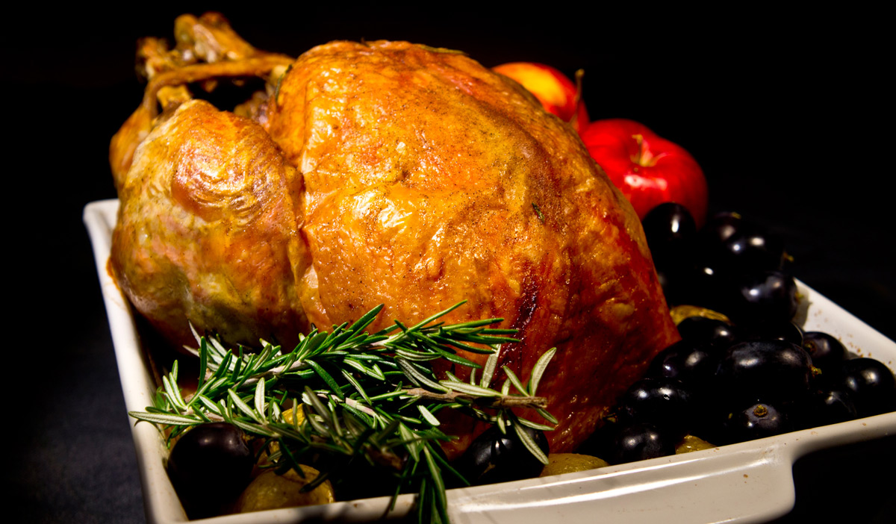

Home
Turkey

Description
Thanksgiving has never been easier than now!
Ingredients
- 1 Whole Turkey
- Butter (lots of butter)
Steps
- Preheat Oven to 450 degrees
- Cover Turkey in Butter
- Place Turkey in preheated oven
- Once Turkey starts to brown, reduce oven to 250
- Take Turkey out before it burns, but after it's fully cooked